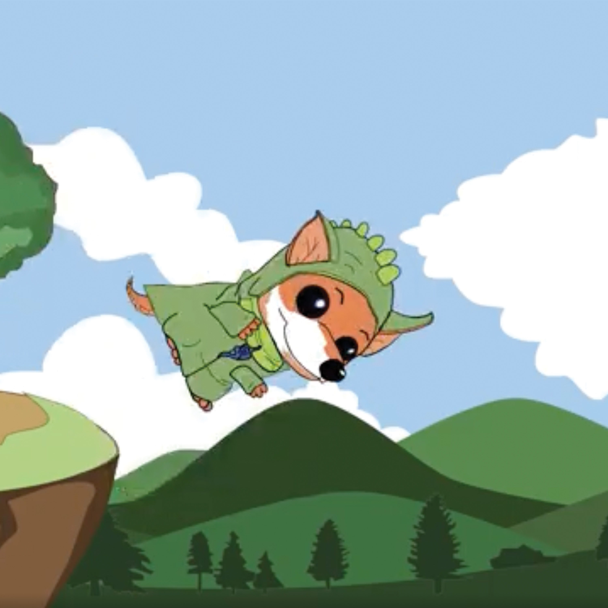
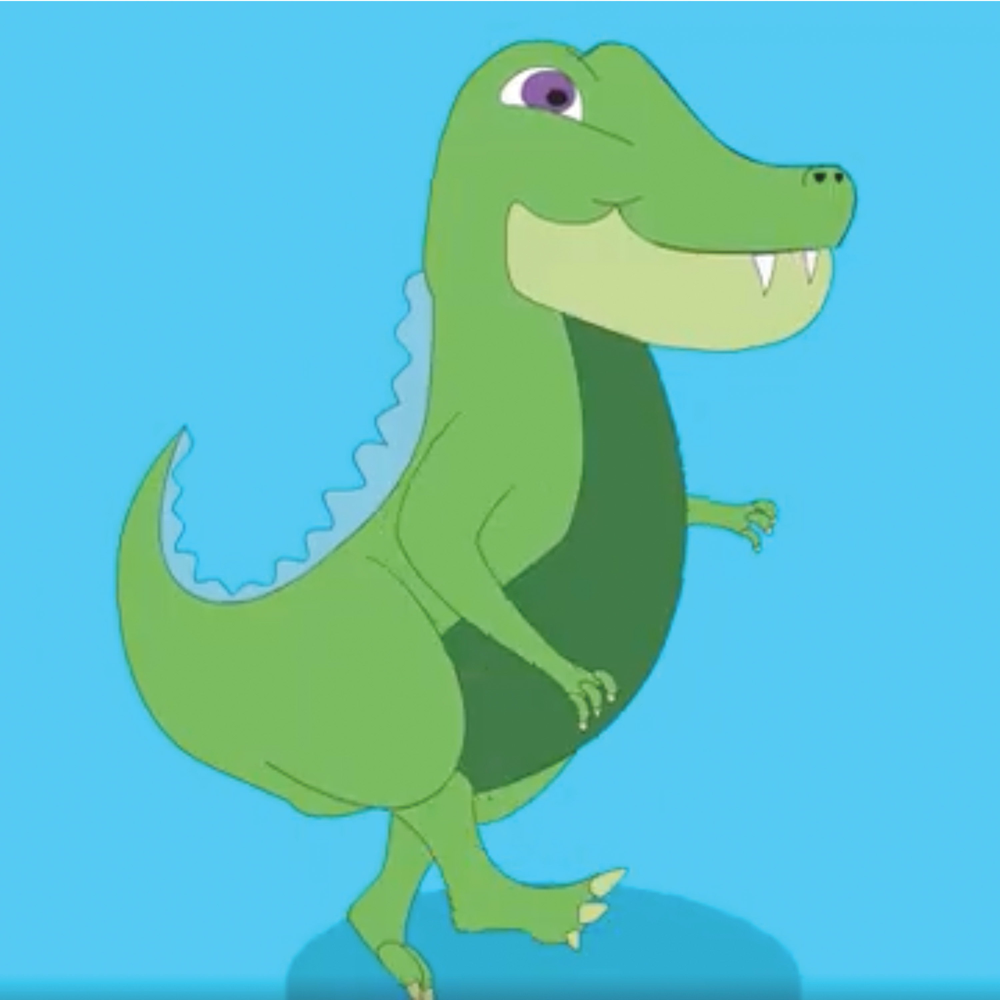
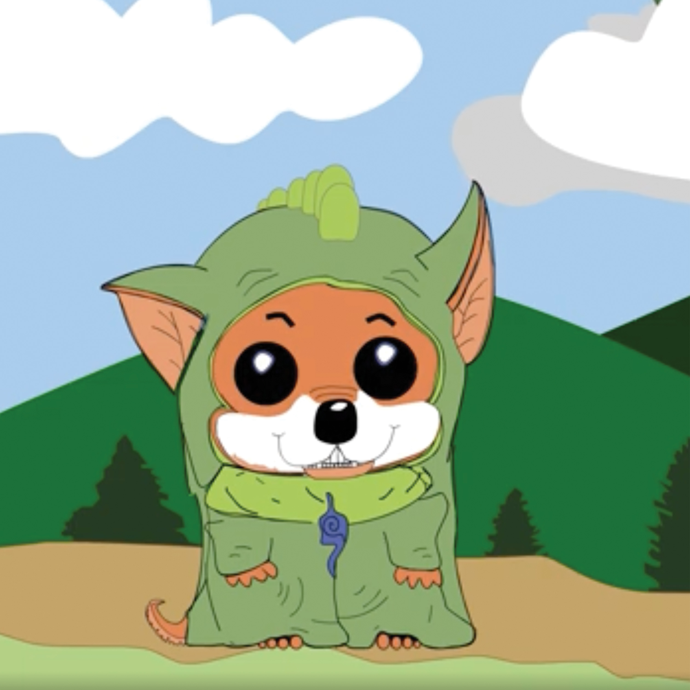
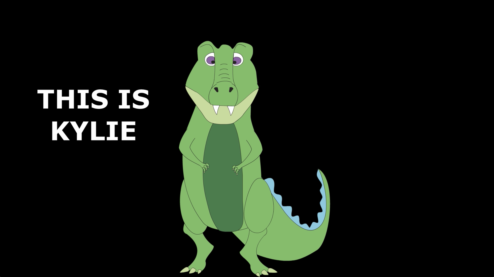
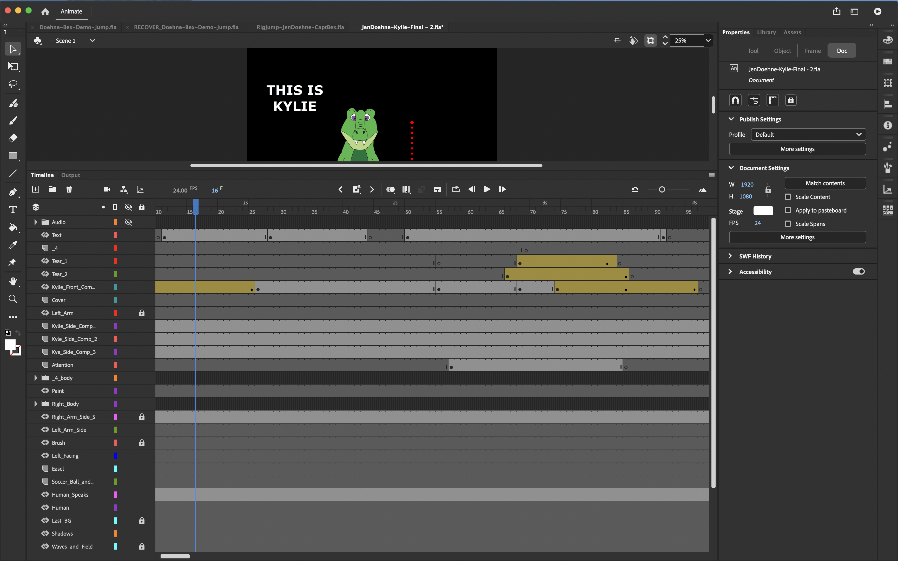
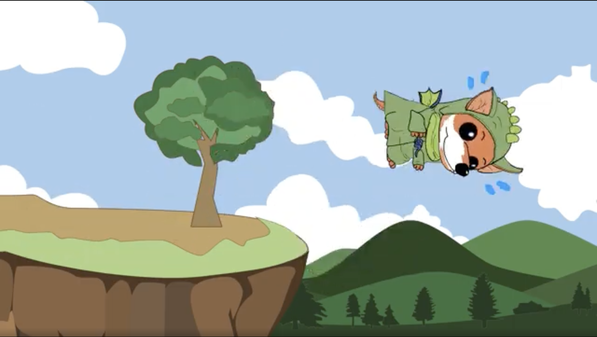
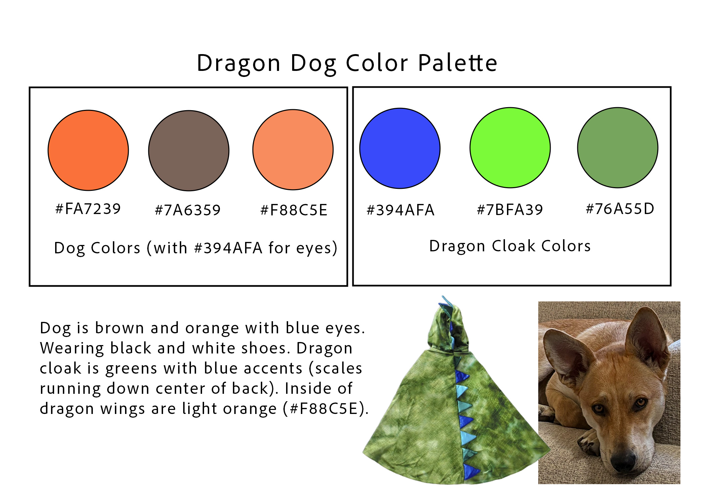
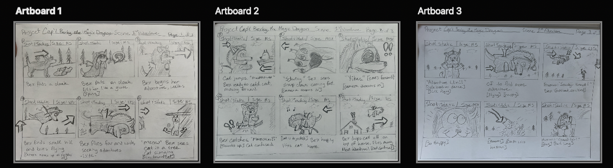
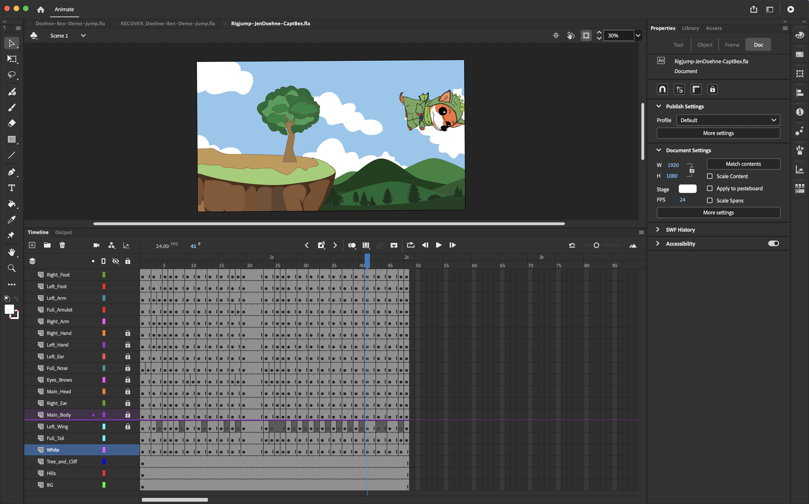
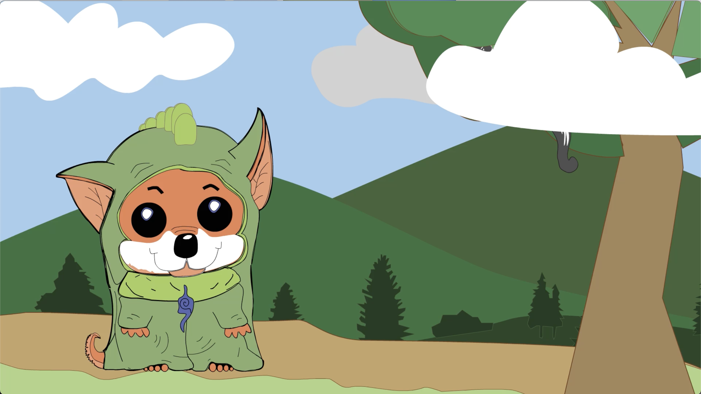

SOFTWARE
Adobe Animate
Adobe Illustrator
Adobe Photoshop
MY ROLE
Character Design & Illustration
Concept & Script Development
Storyboarding & 2D Animation
Voice Performance & Editing
DELIVERABLES
Three Original Animated Shorts
Character & Visual Development
Animation & Compositing
Voiceover & Sound Design
AUDIO & CREDITS
Adobe Creative Suite
Original Voice Performances
Envato Elements Background Music
Original Scripts & Storytelling
SHORT 01 · CHARACTER & TIMING
Kylie's Hobbies
A T-Rex experiments with different hobbies, discovering that some activities are easier said than done when you have tiny arms.
01 / THE CONCEPT
A Tough Issue.
A Wonderful Solution.
Kylie is bored and looking for a new hobby. She tries several activities, but being a T-Rex presents some unexpected challenges. After a series of comic misadventures, she discovers soccer—and finally finds her thing.

02 / CREATIVE DIRECTION
Character, Comedy & Imagination
An expressive T-Rex, playful visual storytelling, and a series of increasingly awkward situations bring Kylie's personality to life. The character design and staging help make each hobby attempt its own little comedy.

Original character and background artwork, developed through illustration and visual planning.
03 / PRODUCTION PROCESS
From Script to Screen
Turning an original story into a short, expressive character animation through narration, visual storytelling, and carefully timed comic moments.

I developed the script, performed the narration, and created the visual assets in Adobe Illustrator. I then animated and refined the scenes in Adobe Animate, adjusting transitions, pacing, and timing to keep the story concise and the humor engaging.
04 / BEHIND THE SCENES
Inside the Timeline
A look at the editing and animation workflows behind the short.

SHORT 02 · MOTION & ANTICIPATION
Bex's Flight
A leisurely walk in a favorite dragon cloak takes an unexpected turn when Bex discovers her wings are more than just decorative.
01 / THE CONCEPT
A Great Cloak.
A Soaring Surprise.
Bex sets off on a walk wearing her favorite dragon cloak. But when its wings catch the air, an ordinary outing turns into an unexpected flight.

02 / CREATIVE DIRECTION
Building a Whimsical World
A playful dragon cloak, an adventurous character, and a touch of fantasy set the tone. Character design, visual staging, and the contrast between an ordinary walk and an unexpected flight help bring the story to life.

Original character and background illustrations developed for the animated short.
03 / PRODUCTION PROCESS
From Grounded to Airborne
The animation builds from a familiar walking sequence into a sudden change in movement, using anticipation, body positioning, and timing to make the flight feel surprising and expressive.

I designed and illustrated the character and visual assets in Adobe Illustrator, then brought the sequence to life in Adobe Animate. Storyboarding, posing, movement, transitions, and timing helped shape Bex's transformation from walking to flying.
04 / BEHIND THE SCENES
Inside the Timeline
A look at the editing and animation workflows behind the short.

SHORT 03 · PACING & SURPRISE
Bex's Afternoon
A sunny afternoon, an original vocal performance, and one very enthusiastic dog make for an unexpectedly entertaining musical moment.
01 / THE CONCEPT
A Sunny Day.
A Sudden Twist.
Bex is enjoying a peaceful afternoon and singing a familiar tune. But a little distraction turns her musical moment into something much more entertaining.

02 / CREATIVE DIRECTION
Voice, Rhythm & Character
The animation centers on a vocal performance, with mouth movements, expressions, and character actions timed to the music. The contrast between Bex's cheerful singing and her unexpected reaction gives the short its personality.

Original character design and illustration, with vocal mapping to guide the animated performance.
03 / PRODUCTION PROCESS
Meet the Star: Capt'n Bexley
Inspired by my own dog, Capt'n Bexley, Bex's character was designed to capture his personality and bring a little canine mischief to the screen.

I designed and illustrated Bex based on my dog, Capt'n Bexley. I also recorded the singing, barking, and howling performances, then timed the animation to the vocals and character sounds. Pacing and editing helped keep the short concise while preserving the comedic timing.
04 / BEHIND THE SCENES
Inside the Timeline
A look at the editing and animation workflows behind the short.

Have a project in mind? Let's get it moving.
CONTACT ME